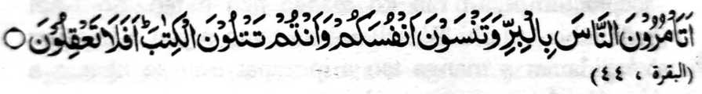
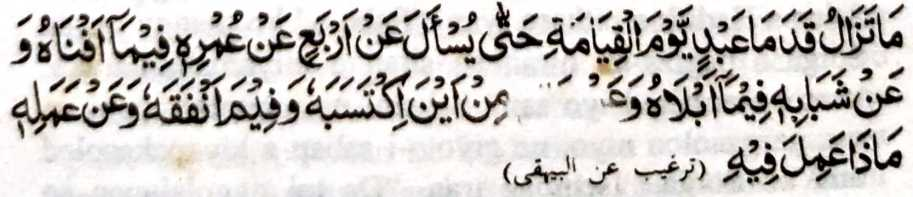
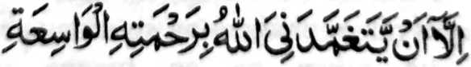

Si-i sangka-iya pinto na aya ni-at si-i na so kainengka-a ko mala a karibatan. Lagid o kinidarainonen o manga Muslim a aden a miyasowa iran a kata-o ago so manga Ulama ko galebek a Tabligh, na sakamaoto mambo aden a manga tao a gi-i ran ipanolon so Islam ko manga ped a tao a nggolalan ko katharo ago so manga daptar, ogaid na indadarainon niran nggolalan so gi-i ran tharo-on. Aya mata-an na siran, ko kababaloy ran a pephanolon, na aya mala a awiden niran a akal na giya kathagompiya o paratiyaya iran sa lawan pen ko kapephagompiya-i ran ko manga ped a tao. So Nabi (Sallallaho ‘Alaihi Wasallam) na tanto niyan a inisapar so lagidanan a manga tao a ipezapar iran so nganin a siran mambo na masosogok iran.
So Nabi (Sallallaho ‘Alaihi Wasallam) ko kagagawi-i ko Mi’raj na miya-ilay niyan a sagorompong a manga tao a so manga modol iran na penggontingen a pekhadeg a gonting. So kini-izaan niyan non o antawa-a siran na pitharo-on o Jibrail (‘Alahis Salaam) a, “giyoto so siran a manga tao a gi-i mamanolon a ped ko Ummat ka ogaid na da iran nggolalanen so gi-i ran ipanolon. Aden a Hadith a pitharo iyan, “Saba-ad ko manga tao sa Sorga a pagiza-an niran so siran a miyamaka-naraka: Antona-ai betad iyo san? Sekami na inonotan nami so manga panolon niyo, na giyoto-i sabap a kiyapakasoled ami ko Sorga.’ Isembag iran, “Da mi nggolalanen so nganin a inipangosiyat ami ko manga ped a tao.”
Isa a Hadith a pitharo iyan, “Maga-an a kapephaka-oma o siksa o Allah ko manga rarata a ‘Ulama a di so kalilid a baradosa. Phamemesa siran ko kailaya iran si-i, sa petharo-on niran: ‘Ino so siksa o Allah na si-i rekami miya-ona a di pen so manga pananakoto?’ Isembag kiran: ‘So siran a somiyopak ba di aden a kata-o niyan ko Agama na mala-i kasala-an a di so siran a da kiran angkanan a kata-o.’” So manga Auliya na pitharo iran a so manga wasiyat o siran a di ran ipenggolalan so manga okit ko Agama, na da a rarad iyan ko manga ped a tao. Giyoto-i sabap a so manga wasiyat, go so manga daptar ago kitab sangka-iya a masa na da den a rarad iyan ko pephamamakineg ago so pembatiya on!
Pitharo o Allah sa Qur’an:

"Ino niyo pezogo-on ko manga manosiya so mapiya, na pakalilipatan niyo so manga ginawa niyo, a sekano na kapephangadi-an niyo so kitab? Ba da a manga sabot iyo? [Surah Al-Baqarah:44]
So Nabi (Sallallaho ‘Alaihi Wasallam) na pitharo iyan:

"Diden malekat so palada a-i o isa oripen ko Alongan a Qiyamah taman sa di ronmi-iza, anyka-iya a pat: (1) So omor iyan o anda niyan riyonot (2) So kangoda niyan o anda niyan inosar? (3) So tamok iyan o anda niyan miyasokat ago anda niyan pinggasto? Go (4) So ‘Ilmo iyan o anda taman-i mininggolalan niyan non?'
So Hazrat Abu Darda (Radhiallaho ‘Anho) a miyatindos a Sahabah o Nabi (Sallallaho ‘Alaihi Wasallam) na pitharo iyan, “Aya mala a ipekhalek aken na so paka-iza a ipagiza raken ko Gawi-i a Kaphangokom sa hadapan o langowan o manosiya: Ino mininggolalan ka so kata-o a matatago reka?”
Aden a Sahabah o Nabi (Sallallaho ‘Alaihi Wasallam) a iniza-an niyan sekaniyan: “Antawa-ai pithamanan a marata ko manga ka-aden?” Minisembag iyan, “Di ngka raken phagiza-an so manga rarata, sa aya phagiza-an ka raken na so manga pipiya. Aya miyakarata-rata ko manga ka-aden na so manga rarata-i ongar a manga ‘Ulama, (ma-ana siran so di ran ipenggolalan so gi-i ran tharo-on).”
Pitharo o Nabi (Sallallaho ‘Alaihi Wasallam) ko isa a Hadith: “So ‘Ilmo na dowa barang: isa on so si-i bo thataman ko dila na da niyan peraradi so poso go aya kiyasabapan sa panendit a pho-on ko Allah; na aya ika dowa na giyoto so riya-ot iyan so poso na miya-oyag iyan so paratiyaya; sa giyoto-i mata-an a phakanggay a gona ” Aya mitotoro ini na kena ba aya bo a paliyogaton na so kathontota niyan ko ‘Ilmo pantag ko marayag a manga bitikan ka ped ro-o pen so ‘Ilmo a pantag ko niyawa a giyoto-i phakasoti ko poso iyan ago phakasindao ko pamikiran niyan, ka odi oto manggola-ola na so ‘Ilmo iyan na khisomariyaon ko Gawi-i a Kaphangokom o anda taman-i kininggolalanen niyan non. Madakel a lagidanan a tapa-os a matatago ko madakel a Hadith.
Giyoto-i sabap a tanto aken a pephangenin ko langon a gi-i manolon ago pephamangosiyat a kathabala iran ko manga ginawa iran ko mapayag masolen, go nggolalanen niran so nganin a ipendolon niran ko manga ped, ka amay-amay na so kapephanolon niran na di tarima-an o Allah, sa lagid den o kiya-ilaya on ko madakel a Ayaat sa Qur’an ago so manga katharo o Nabi (Sallallaho ‘Alaihi Wasallam). Pephamangenin aken ko Allah a ibegay niyan raken so bager a matabal aken so ginawa ko si-i ko mapayag ago masolen aken go minggolalan aken so gi-i aken ipanolon, sabap sa bara-araparapan ako ko manga Limo lyan a kitapok o manga pa-awing aken.
